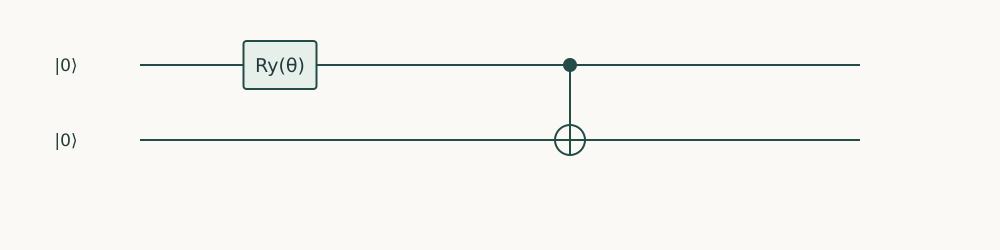

Starting point: Earlier programming chapters; relevant constructions from Quantum Computing and Quantum Algorithms.
Anchor example: Build a small variational eigensolver with an explicit measurement budget.
This lesson includes explanations, worked examples, and problems with solutions. Advanced results whose proofs are outside the chapter are identified explicitly.
So far a person has read each result and decided what to do next. We know how to bind parameters, estimate expectation values with stated uncertainty, and tell noise from bugs. A hybrid program hands the next decision to a classical routine. It prepares a parameterized state, estimates a number such as an energy, and lets an optimizer choose new parameters, many times over.
How do quantum measurements guide a classical optimization loop? We begin with an objective whose whole curve we can derive, so that an implementation mistake has nowhere to hide. Each evaluation of that objective costs estimates, so the loop must use them economically. Then the optimizer needs a direction and a rule for stopping, and both suffer from noisy estimates. Finally we place the loop inside the named methods, variational eigensolvers and QAOA, and ask what a successful run does and does not show.
The test problem has two qubits and one parameter, and we know its answer exactly.
14.1 Parameterized Workflows
A variational program repeatedly prepares a state that depends on parameters and asks for its energy. If we started on a problem we could not solve, a wrong circuit and a weak optimizer would look the same. So we start with an energy we can compute by hand at every angle, and then decide how to request many evaluations of it.
14.1.1 Parameter binding and objectives
We apply \(R_y(\theta)\) to qubit 0 and then a CNOT from qubit 0 to qubit 1. This prepares \(\cos(\theta/2)\ket{00}+\sin(\theta/2)\ket{11}\). For the observable \(H=-ZZ-XX\), what energy \(E(\theta)=\langle H\rangle\) should the program report?
Write \(c=\cos(\theta/2)\) and \(s=\sin(\theta/2)\). Both \(\ket{00}\) and \(\ket{11}\) have equal bits, so \(\langle ZZ\rangle=c^2+s^2=1\). The operator \(XX\) exchanges \(\ket{00}\) and \(\ket{11}\), so \(\langle XX\rangle=2cs=\sin\theta\). Hence \[E(\theta)=-1-\sin\theta,\] with its minimum \(-2\) at \(\theta=\pi/2\), where the state is the Bell pair.
This curve is our oracle for testing the program: the computed energies must match it at every angle before we trust the loop on anything larger. The figure shows the circuit and the two measurements the energy needs, \(ZZ\) directly and \(XX\) after H on both wires.

A one-parameter entangled trial state: cos(θ/2)|00⟩+sin(θ/2)|11⟩. Measure ZZ directly or rotate both wires with H before measuring XX.
Problem 14.1. Why is the energy at θ=0 equal to −1?
Worked solution
The state is 00, so ZZ has expectation one and XX has expectation zero.
14.1.2 Repeated estimation
An optimizer may ask for the energy at hundreds of angles. Should the program build a new circuit for each? No: as with parameter sweeps, we keep one symbolic circuit and pass the angles to the Estimator as an array of parameter rows. The companion does this for a grid of 101 angles. np.linspace(0, np.pi, 101) makes 101 equally spaced angles from 0 to \(\pi\). angles[:, None] turns that flat list into 101 rows of one value each. That is the general shape of a parameter array, one row per experiment and one column per circuit parameter, so the code states its workload explicitly rather than relying on Qiskit to interpret a flat list.
Each evaluation has a cost, even when the host loop is a single line. With the exact local Estimator there is no shot noise, which is right for this first debugging stage. On hardware, every energy would be an estimate, and the program would need to decide how many shots each term gets and how confident each value is.
14.2 Optimization Loops
A grid evaluates everywhere. An optimizer instead moves from one guess to a better one, so it needs a direction to move in, and a rule for when to stop. Both must be computed from estimates. We derive the direction first, then turn to stopping and to making runs comparable.
14.2.1 Gradients and classical updates
Which way should \(\theta\) move? The derivative \(E'(\theta)\) says, but the circuit gives us values of \(E\), not derivatives. Can we get the derivative exactly from a few values?
For our curve, try evaluating at \(\theta\pm\pi/2\): \[\frac{E(\theta+\pi/2)-E(\theta-\pi/2)}2=\frac{-\sin(\theta+\pi/2)+\sin(\theta-\pi/2)}2=-\cos\theta=E'(\theta).\] This is no accident. The rotation \(R_y(\theta)\) has entries \(\cos(\theta/2)\) and \(\pm\sin(\theta/2)\), and the energy is quadratic in them. Products such as \(\cos^2(\theta/2)\) and \(\cos(\theta/2)\sin(\theta/2)\) are combinations of \(1\), \(\cos\theta\) and \(\sin\theta\), so \(E(\theta)=A+B\cos\theta+C\sin\theta\) for some constants. The identity above holds for \(\cos\theta\) and \(\sin\theta\) separately, so it holds for every such \(E\). This is the parameter-shift rule: for a rotation generated by a single Pauli operator, the exact derivative is half the difference of two energies.
A gradient step then sets \(\theta\leftarrow\theta-\eta E'(\theta)\), where the step size \(\eta\) is called the learning rate. For one parameter, though, the grid is simpler and gives a reproducible baseline. Larger parameter spaces need more careful optimizers. No optimizer, however sophisticated, repairs a wrong circuit or a wrong objective.
14.2.2 Stopping criteria and reproducibility
When should the loop stop? “When the energy stops improving” sounds right, but with estimates the energy always fluctuates. An improvement smaller than its standard error is not evidence of progress. So a stopping rule combines a minimum improvement, judged against the uncertainty, with a fixed budget of evaluations.
Noise also distorts the direction. Estimated gradients can be biased, and in flat regions they are small compared with their errors, so the loop wanders. To compare two methods fairly, we fix their starting points and seeds. We also record failed runs and how results depend on the starting point. Choosing the best of many seeds afterwards understates both the classical and the quantum cost.
Problem 14.2. Can a measured energy below −2 be accepted as a better solution?
Worked solution
Not for this exact Hamiltonian. It indicates statistical fluctuation, bias, or a programming error; the true minimum is −2.
14.3 Applications
Our loop is a small instance of methods from the algorithms course. What do those methods promise, and what can a run like ours show about them? We treat the variational eigensolver first, since our example is one, then QAOA and the question of performance.
14.3.1 Variational eigensolvers
A variational eigensolver has three parts: a family of trial states, an estimator of the energy, and a classical search over parameters. Why should the lowest energy found say anything about the ground energy \(\lambda_{\min}\), the smallest eigenvalue of \(H\)? Expand a trial state in eigenvectors of \(H\), \(\ket\psi=\sum_kc_k\ket{e_k}\). Then \[\langle H\rangle=\sum_k|c_k|^2\lambda_k\ \ge\ \lambda_{\min}\sum_k|c_k|^2=\lambda_{\min}.\]
So every exact trial energy is an upper bound on the ground energy. This is the variational bound. It does not promise that the family contains the ground state, or that the search finds its best member. In our example the ground state of \(-ZZ-XX\) is the Bell pair, with energy \(-2\), and our family contains it at \(\theta=\pi/2\). An estimated energy can still fall below \(\lambda_{\min}\) through noise or bias. That breaks no law of quantum mechanics, but it does mean the estimate is wrong.
14.3.2 QAOA and performance comparisons
The quantum approximate optimization algorithm (QAOA), from the algorithms course, keeps the same loop and changes the trial family. Its states alternate evolutions under a cost observable, which encodes an optimization problem, and under a mixing observable. What would show that QAOA, or any variational method, is useful? A comparison with a good classical heuristic on the same instances, counting the evaluations spent on training as well as the final answer.
Our companion shows something much smaller: that the loop’s interface is correct. It compares every one of the 101 grid energies with \(-1-\sin\theta\), and then finds the minimum. np.argmin returns the position of the smallest entry, and int makes it an ordinary integer. The grid spacing is \(\pi/100\), so entry 50 is exactly \(\theta=\pi/2\), and the minimum is \(-2\). A solved two-qubit problem demonstrates correctness, not advantage.
"""Runnable companion for Quantum Programming, Chapter 14."""
import numpy as np
from qiskit import QuantumCircuit
from qiskit.circuit import Parameter
from qiskit.primitives import StatevectorEstimator
from qiskit.quantum_info import SparsePauliOp
theta = Parameter("theta")
qc = QuantumCircuit(2)
qc.ry(theta, 0); qc.cx(0, 1)
H = SparsePauliOp.from_list([("ZZ", -1), ("XX", -1)])
angles = np.linspace(0, np.pi, 101)
energies = StatevectorEstimator().run([(qc, H, angles[:, None])]).result()[0].data.evs
assert np.allclose(energies, -1 - np.sin(angles))
best = int(np.argmin(energies))
assert np.isclose(energies[best], -2)
print("Grid minimum:", angles[best], energies[best])
It provides a transparent reference on the small problem and exposes errors in sophisticated optimization machinery. Its cost grows rapidly with parameter dimension, so it is not a general scalable strategy.
Our observables were sums of two Pauli strings. Advanced algorithms instead transform operators: they simulate time evolution, embed non-unitary matrices in unitaries, and apply polynomials to them. How do we implement such transformations with explicit resource costs?
Questions and worked problems
These exercises draw on the whole chapter. Attempt each question before opening a hint, explain your reasoning, then compare it with the worked solution.
For the trial state with \(E(\theta)=-1-\sin\theta\), compute the energy and the parameter-shift gradient \(\frac12[E(\theta+\pi/2)-E(\theta-\pi/2)]\) at \(\theta=\pi/6\), using the Estimator. Compare with \(-\cos\theta\).
Hint 1
\(E(\pi/6)=-1.5\).
Hint 2
The derivative of \(-1-\sin\theta\) is \(-\cos\theta\).
Worked solution
\(E(\pi/6)=-1.5\) and the parameter-shift gradient is \(-0.866=-\cos(\pi/6)\), exact for this single-rotation circuit. The rule needs two energy evaluations per parameter, which on hardware means two separately estimated energies, each with shot noise.
import numpy as np
from qiskit import QuantumCircuit
from qiskit.circuit import Parameter
from qiskit.primitives import StatevectorEstimator
from qiskit.quantum_info import SparsePauliOp
theta = Parameter("theta")
ansatz = QuantumCircuit(2)
ansatz.ry(theta, 0)
ansatz.cx(0, 1)
H = SparsePauliOp.from_list([("ZZ", -1), ("XX", -1)])
estimator = StatevectorEstimator()
energy = lambda t: float(estimator.run([(ansatz, H, [[t]])]).result()[0].data.evs[0])
t = np.pi / 6
assert np.isclose(energy(t), -1.5)
assert np.isclose((energy(t + np.pi / 2) - energy(t - np.pi / 2)) / 2, -np.cos(t))
The companion’s grid has \(101\) points on \([0,\pi]\). Estimate the worst-case energy error at the grid minimum, using \(E\approx-2+\frac12(\theta-\pi/2)^2\) near the optimum. Is the grid fine enough here?
Hint 1
Grid spacing \(\pi/100\approx0.031\); the true minimum is at most half a spacing from a grid point.
Hint 2
\(\frac12(0.0157)^2\).
Worked solution
The spacing is about \(0.031\), so the nearest grid point is at most \(0.016\) from \(\pi/2\), giving an energy error of at most \(\frac12(0.016)^2\approx1.2\times10^{-4}\). Here \(\pi/2\) is actually a grid point (index \(50\)), so the error is zero. Energy is quadratic near a minimum, so modest grids give accurate energies, though less accurate parameters.
A gradient-based optimization uses \(10\) parameters, the parameter-shift rule, and \(50\) iterations, each energy estimated with \(10^4\) shots. How many energy evaluations and shots does it need, ignoring line searches and restarts?
Hint 1
Two evaluations per parameter per iteration.
Hint 2
Multiply by shots per evaluation.
Worked solution
\(2\times10\times50=1000\) energy evaluations, or \(10^7\) shots, plus any evaluations of the energy itself for stopping decisions. The classical loop looks short, but the quantum cost scales with parameters, iterations, and precision, and must be budgeted before running on hardware.
Implement gradient descent with the parameter-shift rule, starting at \(\theta=0.2\), for \(20\) steps. Compare learning rates \(\eta=0.01\), \(1.0\), and \(2.5\). Which reaches the minimum, and why do the others fail?
Hint 1
The update is \(\theta\leftarrow\theta-\eta\,dE/d\theta=\theta+\eta\cos\theta\).
Hint 2
Near \(\pi/2\), the error is multiplied by about \(1-\eta\) per step.
Worked solution
With \(\eta=1\), the iteration reaches \(\theta=\pi/2\) and \(E=-2\). With \(\eta=0.01\) it barely moves (to about \(0.39\)) in \(20\) steps. With \(\eta=2.5\) it overshoots: near the minimum the error is multiplied by about \(1-\eta=-1.5\) each step, so it oscillates and grows instead of converging. Step size must match the landscape’s curvature; the analytic curve lets the program be tested before noise complicates the picture.
import numpy as np
from qiskit import QuantumCircuit
from qiskit.circuit import Parameter
from qiskit.primitives import StatevectorEstimator
from qiskit.quantum_info import SparsePauliOp
theta = Parameter("theta")
ansatz = QuantumCircuit(2)
ansatz.ry(theta, 0)
ansatz.cx(0, 1)
H = SparsePauliOp.from_list([("ZZ", -1), ("XX", -1)])
estimator = StatevectorEstimator()
energy = lambda t: float(estimator.run([(ansatz, H, [[t]])]).result()[0].data.evs[0])
def descend(rate, start=0.2, steps=20):
t = start
for _ in range(steps):
t -= rate * (energy(t + np.pi / 2) - energy(t - np.pi / 2)) / 2
return t
assert np.isclose(energy(descend(1.0)), -2)
assert energy(descend(0.01)) > -1.5 and energy(descend(2.5)) > -1.5
Estimate the energy at \(\theta=\pi/3\) from samples instead of exactly: measure ZZ directly and XX after Hadamards, with \(4096\) shots each. (a) What are the exact energy and the single-shot variances? (b) What standard error should the estimate have? (c) Check the sampled estimate.
(a) \(E=-1-\sin\frac\pi3\approx-1.866\). The ZZ term has zero variance on this family, and the XX term has variance \(1-0.75=0.25\). (b) The standard error is about \(\sqrt{0.25/4096}\approx0.008\), all from the XX term. (c) The sampled estimate lands within a few hundredths of \(-1.866\). A hardware optimizer sees energies with this kind of noise, which affects gradients and stopping rules.
Change the Hamiltonian to \(H=ZZ-XX\) while keeping the same ansatz. (a) Evaluate the ansatz energy over a full grid \(\theta\in[0,2\pi]\) and find its minimum. (b) Compute the true ground energy by diagonalizing \(H\). (c) Explain the gap.
Hint 1
On the ansatz, \(\langle ZZ\rangle=1\) and \(\langle XX\rangle=\sin\theta\).
Hint 2
The true ground state has \(ZZ=-1\).
Worked solution
(a) The ansatz energy is \(1-\sin\theta\), with minimum \(0\). (b) The true ground energy is \(-2\), reached by \((\ket{01}+\ket{10})/\sqrt2\). (c) The ansatz only produces states with equal bits (\(ZZ=+1\)), so it cannot reach the ground state, which has unequal bits. No optimizer can fix an ansatz that excludes the answer; checking against exact diagonalization on small instances exposes the expressiveness gap.
import numpy as np
from qiskit import QuantumCircuit
from qiskit.circuit import Parameter
from qiskit.primitives import StatevectorEstimator
from qiskit.quantum_info import SparsePauliOp
theta = Parameter("theta")
ansatz = QuantumCircuit(2)
ansatz.ry(theta, 0)
ansatz.cx(0, 1)
H = SparsePauliOp.from_list([("ZZ", 1), ("XX", -1)])
grid = np.linspace(0, 2 * np.pi, 201)
energies = StatevectorEstimator().run([(ansatz, H, grid[:, None])]).result()[0].data.evs
assert np.isclose(energies.min(), 0, atol=1e-9)
assert np.isclose(np.linalg.eigvalsh(H.to_matrix()).min(), -2)
Implement depth-1 QAOA for MaxCut on one edge: H on both qubits, the cost evolution as rzz(\(-\gamma\)), and the mixer as rx(\(2\beta\)) on each qubit. Use the observable \(C=\frac12(II-ZZ)\). Evaluate \(\langle C\rangle\) at several \((\gamma,\beta)\) and compare with \(F=\frac12+\frac12\sin4\beta\sin\gamma\). Watch the parameter order.
Hint 1
Qiskit orders parameters by name: beta before gamma.
Hint 2
\(e^{-i\gamma C}\) equals rzz(\(-\gamma\)) up to a global phase.
Worked solution
Because the circuit’s parameters are ordered beta, gamma, each value row must be written as \([\beta,\gamma]\). With that order, the Estimator reproduces \(F\) exactly: \(1\) at \((\gamma,\beta)=(\pi/2,\pi/8)\), \(0.854\) at \((\pi/2,\pi/16)\) and at \((\pi/4,\pi/8)\), and \(0\) at \((\pi/2,3\pi/8)\). Supplying \([\gamma,\beta]\) instead gives \(0.5\) everywhere for these points, a silent error that the analytic comparison catches.
import numpy as np
from qiskit import QuantumCircuit
from qiskit.circuit import Parameter
from qiskit.primitives import StatevectorEstimator
from qiskit.quantum_info import SparsePauliOp
gamma, beta = Parameter("gamma"), Parameter("beta")
qaoa = QuantumCircuit(2)
qaoa.h([0, 1])
qaoa.rzz(-gamma, 0, 1)
qaoa.rx(2 * beta, 0)
qaoa.rx(2 * beta, 1)
assert list(qaoa.parameters) == [beta, gamma]
C = SparsePauliOp.from_list([("II", 0.5), ("ZZ", -0.5)])
points = [(np.pi / 8, np.pi / 2), (np.pi / 16, np.pi / 2), (np.pi / 8, np.pi / 4), (3 * np.pi / 8, np.pi / 2)]
evs = StatevectorEstimator().run([(qaoa, C, [list(p) for p in points])]).result()[0].data.evs
expected = [0.5 + 0.5 * np.sin(4 * b) * np.sin(g) for b, g in points]
assert np.allclose(evs, expected)
A noisy hardware run reports \(E=-2.03\pm0.02\) for \(H=-ZZ-XX\), whose true ground energy is \(-2\). A student concludes that the optimizer found “a better solution than the ground state.” Explain what the result actually indicates.
Hint 1
The variational principle bounds exact energies from below by \(E_0\).
Hint 2
\(-2.03\) is \(1.5\) standard errors below \(-2\).
Worked solution
No state has energy below \(-2\), so the reading is an estimation artifact: \(-2.03\) is \(1.5\) standard errors below the bound, consistent with statistical fluctuation, or with bias from noise or mitigation. Selecting the lowest of many noisy evaluations also biases the reported minimum downward. The right response is to re-estimate the energy at the chosen parameters with fresh shots and report it with its uncertainty, not to accept the lowest value seen.
Compare gradient estimators under shot noise. Each energy estimate has standard error \(\sigma=0.01\). (a) The parameter-shift rule uses shifts of \(\pm\pi/2\). Find the standard error of its gradient. (b) A central finite difference uses \(\pm h\) with \(h=0.01\). Find its standard error. (c) Why is a small \(h\) attractive in exact arithmetic but harmful with shots?
Hint 1
Parameter shift: \((E_+-E_-)/2\).
Hint 2
Finite difference: \((E_+-E_-)/(2h)\).
Worked solution
(a) \(\sigma\sqrt2/2\approx0.007\). (b) \(\sigma\sqrt2/(2h)\approx0.71\), a hundred times larger than the gradient’s typical size. (c) Small \(h\) reduces the truncation error of a finite difference, but it divides the noise by \(h\). Parameter shift is exact for Pauli-rotation parameters and uses large shifts, so it does not amplify noise. Gradient methods must be chosen for noisy evaluations, not exact ones.
An optimization is run from \(20\) random initial points and the best result is reported. Each run uses \(500\) energy evaluations of \(10^4\) shots. (a) What is the total quantum cost? (b) If \(15\) runs converge to a local minimum and \(5\) to the global one, what should the report include? (c) Why does reporting only the best run misrepresent the method?
Hint 1
Count all runs, including failed ones.
Hint 2
Report success rate and spread.
Worked solution
(a) \(20\times500\times10^4=10^8\) shots. (b) The success rate (\(5/20\)), the distribution of final energies, the evaluation budget per run, the seeds, and the total cost. (c) The best run alone hides the \(75\%\) failure rate and the twentyfold cost of finding it; a different method that succeeds from every start may be better even if its best result is identical.